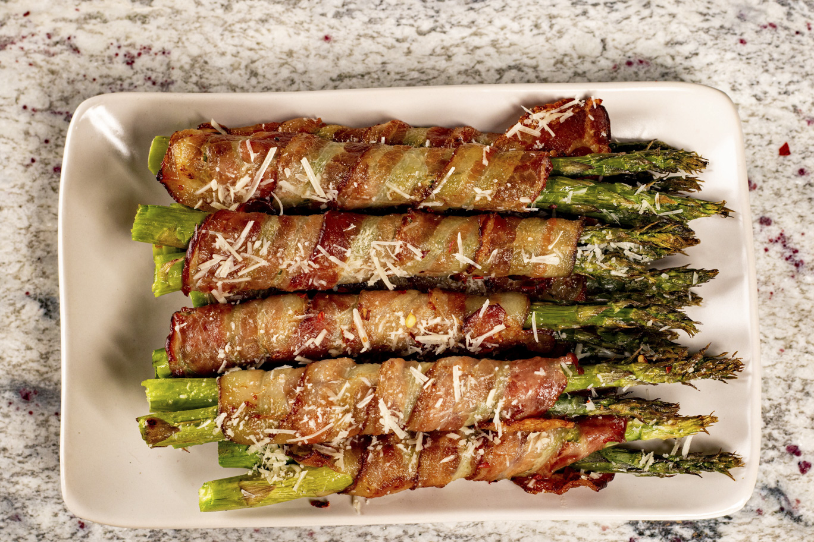

Bacon Wrapped Asparagus

Description
Enjoy these bacon wrapped asparagus spears for a delicious springtime
appetizer or side dish
Cook it on the grill or bake in a hot oven for extra crispy bacon.
Ingredients
- 1 pound fresh asparagus, trimmed
- 1 tablespoon olive oil
- 6 slices bacon, or more to taste
- ground black pepper to taste
Steps
-
Place asparagus in a large bowl. Pour olive oil over spears and coat
each one. Wrap 2 to 3 spears with 1 slice of bacon. Repeat with
remaining asparagus and bacon.
-
Preheat an outdoor grill for medium heat and lightly oil the grate.
Grill asparagus until bacon is crispy, 3 to 4 minutes per side. Season
with pepper.